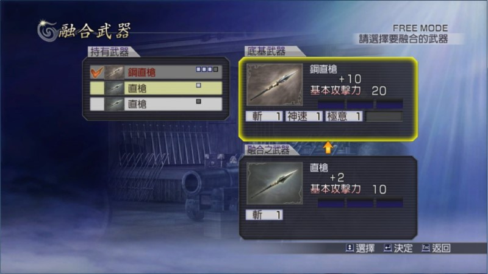

融合流程展示圖
在「兵營」畫面選擇「改造武器」：
然後選擇「融合武器」：
接著挑選「底基武器」，也就是要強化的武器：
再挑選「融合之武器」，也就是拿來當材料的武器：

將需要融合的效果一一選擇起來，再按「確定融合」：
最後按「是」就完成一次融合了！
回頭看看現在武器強化後數值怎樣：
融合須知
１、融合武器需要消費「累積經驗值」。
２、任何做為材料的武器，最少都能用來強化「攻撃」與「空槽」各 +1。
３、當作材料的武器「攻撃」與「空槽」越高，就能融合越高數值。
４、「攻撃」最多強化到 +20，「空槽」最多強化到 8 格。
５、「攻撃」每 +1 其實是「角色總攻擊力 +1%」，換句話說「攻擊 +20」的武器，效果其實是「（角色攻擊力＋武器基本攻擊力）x 20%」。（這點有待驗證）
６、如果當作材料的武器有「屬性」，則可將「屬性」融合到「空槽」裡面。
７、每種「屬性」最高可以融合到 10 級。
８、既然「空槽」最多只能強化到 8 格，那一把武器最多只能附加 8 種屬性。
屬性的部分，請參考「武器篇：屬性」。
各種融合項目所消費累積經驗值一覽
攻撃 每 +1 消費 300
空槽 每 +1 消費 150
炎 每 +1 消費 600
冰 每 +1 消費 700
雷 每 +1 消費 500
陽 每 +1 消費 550
斬 每 +1 消費 800
吸生 每 +1 消費 600
吸活 每 +1 消費 700
破天 每 +1 消費 300
勇猛 每 +1 消費 500
旋風 每 +1 消費 400
分身 每 +1 消費 400
神速 每 +1 消費 300
極意 每 +1 消費 350
背水 每 +1 消費 400